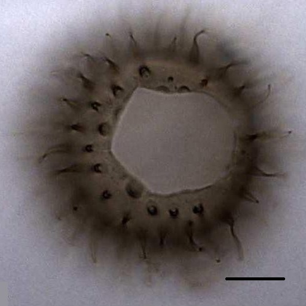
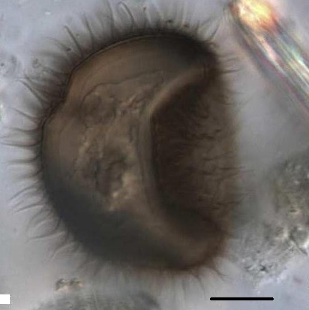
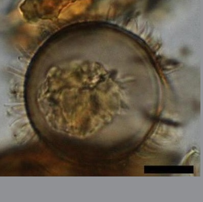
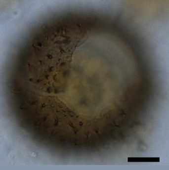
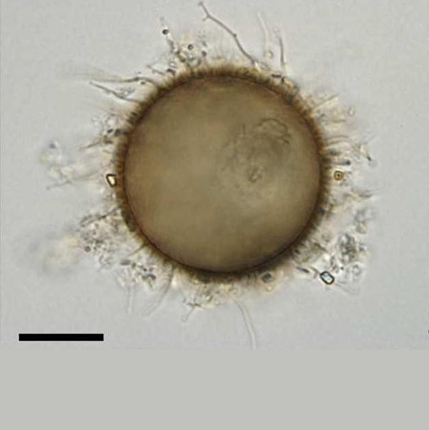
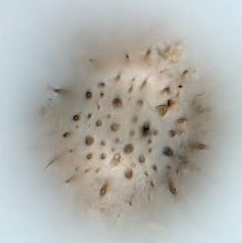
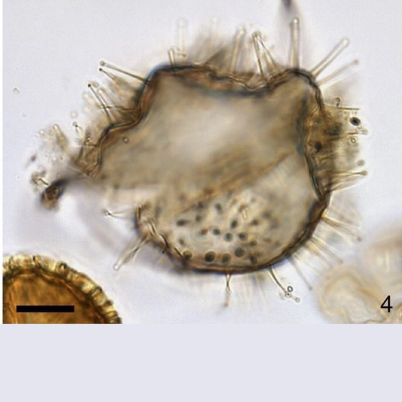

CYSTS LIST
ARCHAEPERIDINIUM/RSBC
The cyst of Archaeperidinium bailongense is different from any other cysts of Archaeperidinium because of the unique combination of a granulate surface, a large size and long and slender processes, which are widely separated. The cyst of Archaeperidinium constrictum is most similar to that of Archaeperidinium saanichi but the former has more uniform process lengths and processes that are often much more dense. The cyst of Chinese Archaeperidinium minutum is very similar to that of Archaeperidinium minutum sensu Yamaguchi et al. (2011), but is less dense in number of processes. The Archaeperidinium cysts differ from Echinidinium aculeatum Zonneveld since that species is smaller (16-26 um.), has less dense processes and recurved aculeate processes (Zonneveld 1997). The Archaeperidinium cysts differ from Echinidinium karaense Head et al. because that species has both wide and narrow processes and opens with a single split (Head et al. 2001). Islandinium? cezare (de Vernal) Head et al. differs from all cysts of Archaeperidinium because of its granulate surface, except for the cyst of Archaeperidinium bailongense. Archaeperidinium bailongense differs from Islandinium? cezare in archeopyle, which is likely saphopylic for Islandinium? cezare (Head et al. 2001). All other spiny brown cysts are acuminate (Radi et al. 2013). All the cysts of Archaeperidinium have a brown spherical spiny cyst with a theropylic archeopyle corresponding to 2a plate and identical plate patterns (Yamaguchi et al. 2011; Mertens et al. 2012; present study) (Liu et al., 2015).
Surface |
Process |
Archeopyle |
Density ofprocesses(10 x 10 um.) |
Species |
Central body (um.) |
Process (um.) |
Image |
Granulate/Light brown |
SlenderNarrow baseCapitate end. |
2a, averageTheropylic |
20(24.3)30 |
cyst ofArchaeperidinium bailongense | 38.3 (43.6) 50.3 (D) |
1 (1.7) 2.4 (B)6.4 (8.7) 10.3 (L) |
 |
Smooth/Light brown |
Narrow baseCapitate end. |
2a, largeTheropylic |
19(27.5)37 |
cyst ofArchaeperidinium constrictum | 28.1 (36.6) 47.6 (D) |
1.4 (1.8) 2.4 (B)3.8 (6.0) 14.6 (L) |
 |
Smooth/Light brown |
Narrow baseCapitate end. |
2a, smallTheropylic |
6(9.7)12 |
cyst ofArchaeperidinium minutumfrom China | 26.5 (36.3) 47.6 (D) |
0.8 (1.2) 1.4 (B)4.0 (6.2) 14.6 (L) |
 |
Smooth/Light brown |
Narrow baseCapitate end. |
2a, smallTheropylic |
20(24.3)30 |
cyst ofArchaeperidinium minutumsensu Yamaguchi et al. 2012 | 24.3 (30.2) 33.1 (D) |
3.4 (5.1) 7.2 (L) |
|
Smooth/Hazel brown |
Wide baseCapitate end. |
2a, largeTheropylic |
15(9.2)22 |
cyst ofArchaeperidinium saanichi | 37.1 (45.0) 52.0 (D) |
2.8 (5.4) 7.8 (L) |
 |
Pale brown |
Longer and hollow (P)Shorter and solid (S) |
2a, largeTheropylic |
- |
cyst ofArchaeperidinium monospinum | 28 to 40 (D) |
3 to 7 (Long-L)3 (Short-L) |
 |
Smooth |
Non-acuminate end/HollowOpen aculeate processes |
Theropylic |
Less denseprocesses |
Echinidiniumaculeatum | 16 to 26 (D) |
6 to 8 (L) |
|
Smooth |
Non-acuminate endWide and narrowprocesses |
Theropylic |
- |
Echinidiniumkaraense | 29 to 36 (D) |
5 to 7 (L) |
 |
Granulate |
Non-acuminateSolid to apiculocavate |
Not recognizedwith certainty |
- |
Islandinium?cezare | 29 to 45 (D) |
4 to 9 (L) |
 |